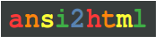
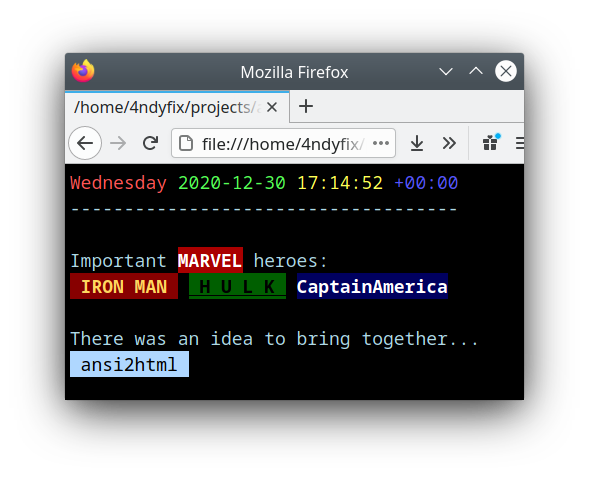

ansi2html
Converts colored terminal output to html tags.
ANSI color escape sequences, created for example by the Colorize module, are converted to valid HTML fragments for using in a HTML document.
One use case could be to build a web service for a CLI tool. Then show the original colored output in an integrated web UI.
The basic work was done by the Ruby community. Many thanks to bcat and ansi-to-html.
By using the Colorize module for input: ColorANSI, Color256, ColorRGB and available text decorations can be mixed-used. True-color (24-bit RGB) support was added.

Installation
- Add the dependency to your “shard.yml’:
dependencies:
ansi2html:
github: 4ndyfix/ansi2html- Run
shards install
Usage
A very simple example.
require "colorize"
require "ansi2html"
color = 90
ansi_text = String.build do |io|
io << Time.utc.to_s("%A %Y-%m-%d %H:%M:%S %:z")
.split.map { |text| "\x1b[#{(color += 1).to_s}m#{text}\x1b[0m"}.join(" ")
io << "\n#{"-" * 36}\n\nImportant #{"MARVEL".colorize(:white).back(:red).bold} heroes:\n"
io << " IRON MAN ".colorize(Colorize::Color256.new(221)).back(Colorize::Color256.new(88)).bright
io << " " << " H U L K ".colorize(:black).back(Colorize::Color256.new(22)).bold.underline << " "
io << "CaptainAmerica".colorize(:white).back(Colorize::ColorRGB.new(0, 0, 95)).bold
io << "\n\nThere was an idea to bring together...\n"
io << " ansi2html ".colorize(:black).back(Colorize::Color256.new(153))
end
puts ansi_text
html_frag = Ansi2Html.new.convert ansi_text
puts html_frag
File.open "ansi2.html", "w" do |f|
f.puts <<-HTML
<html>
<head/>
<body style="background-color:black;color:lightblue;">
<pre style="font-size:30px">#{html_frag}</pre>
</body>
</html>
HTML
endPlease open the file ansi2.html in a web browser.

Contributing
- Fork it (<https://github.com/4ndyfix/ansi2html/fork>)
- Create your feature branch (
git checkout -b my-new-feature) - Commit your changes (
git commit -am "Add some feature") - Push to the branch (
git push origin my-new-feature) - Create a new Pull Request
Contributors
- 4ndyfix - creator and maintainer